Manejo de cuentas
Antes que nada debemos tener muy en claro cómo gestionar las sesiones.
Acceder
Así se ve apenas instalamos el navegador (si ya estaba instalado, continuar en el próximo paso).
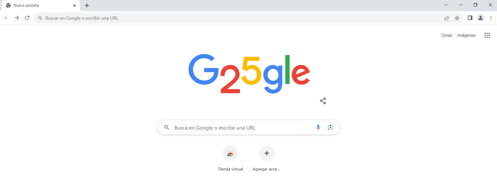
En este estado, podemos ver que no hay ninguna sesion iniciada, lo notamos porque en la esquina superior derecha aún no aparece un icono personal.
Para acceder desde nuestra cuenta (ya creada), debemos elegir cualquier aplicación de google.
Vamos a elegir "Drive" (puede ser cualquiera).
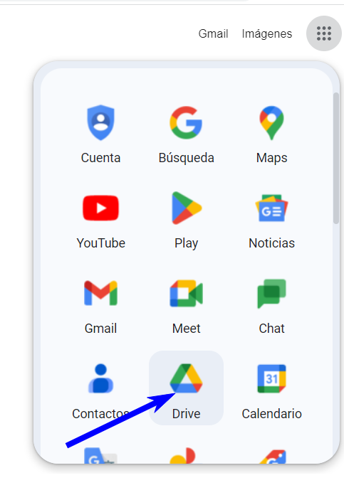
Vamos a buscar siempre "ACCEDER" (esto aplica para cualquiera de las aplicaciones de Google).
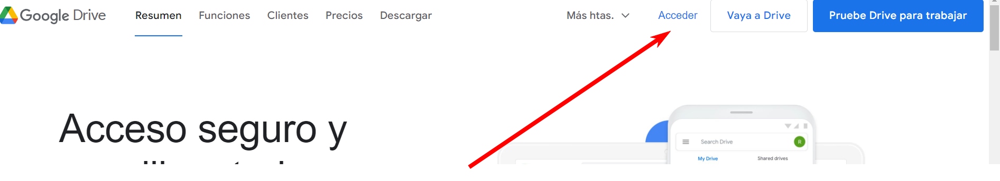
Llegamos a la pantalla de "Acceder". Acá ingresamos nuestro usuario y pulsamos "Siguiente".
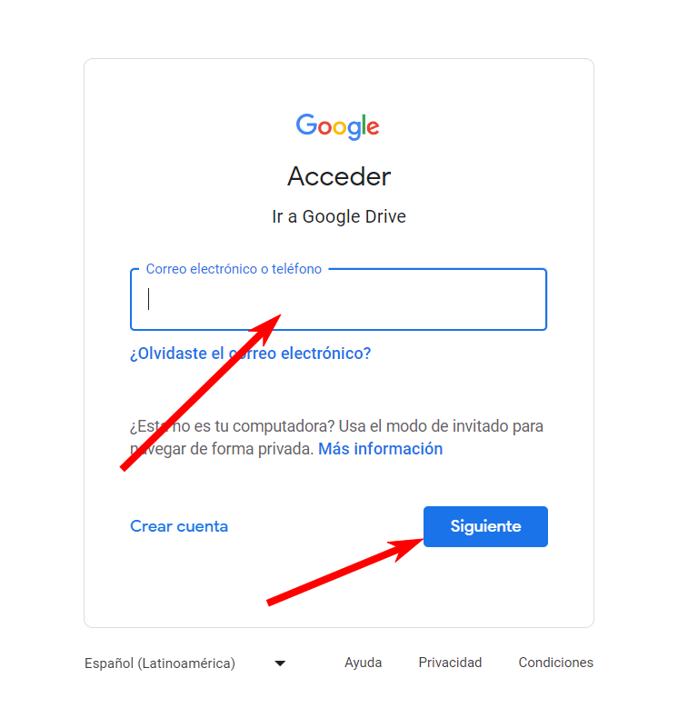
Ingresamos nuestra contraseña y pulsamos "Siguiente".
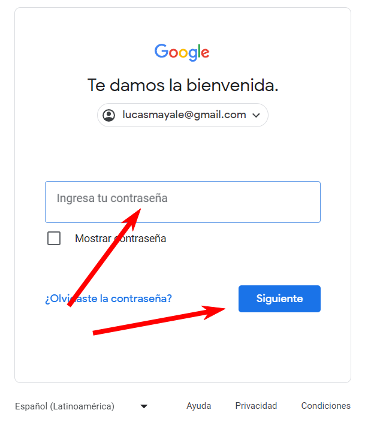
Ya accedimos. A la izquierda podemos ver la barra de Drive y en la esquina superior derecha, ahora podemos nuestro icono personal (si nunca lo personalizamos, vamos a ver una letra que se corresponde a nuestra inicial con un fondo de color).
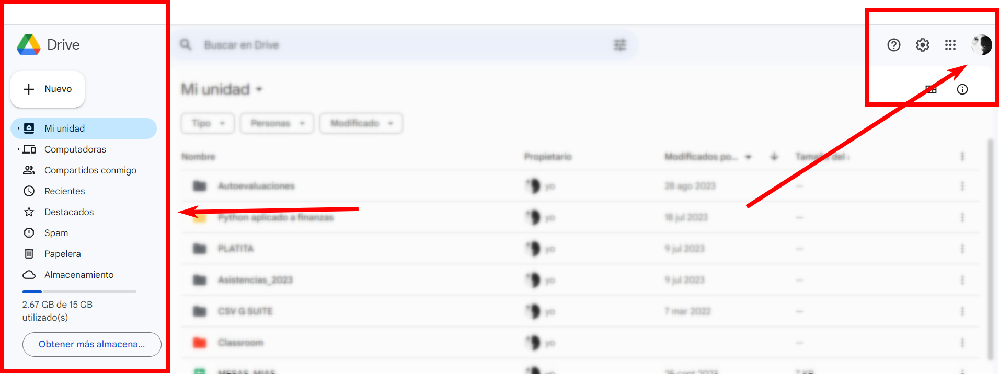
Alternar entre cuentas
Ahora vamos a ver cómo alternar entre diferentes cuentas (esto aplica solo en caso de que hayamos accedido en más de una cuenta).
Si solo accedimos desde una cuenta, se ve así.
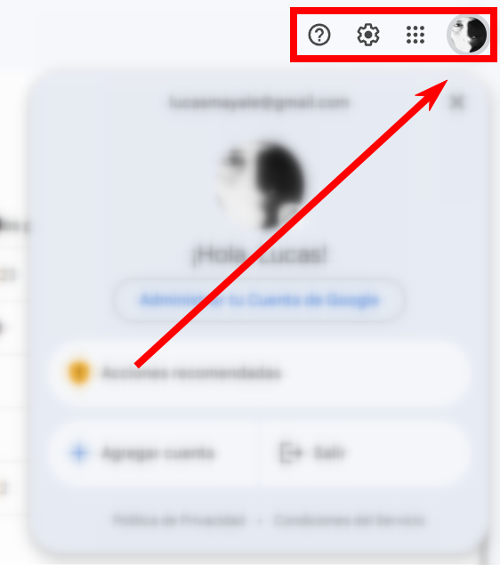
Si tenemos varias sesiones activas, se ve así.
Pulsando sobre cada icono, cambiamos de cuenta.
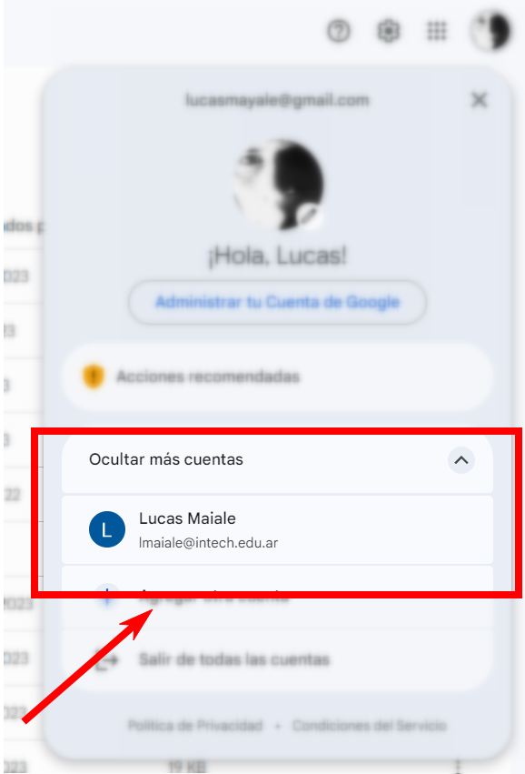
Acá podemos ver cómo cambié a la otra cuenta.
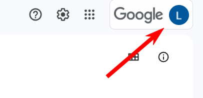
Cerrar sesión
Finalmente vamos a ver cómo cerrar sesión. Esto es recomendable si estamos usando una máquina que no es nuestra (Ver "Modo Incognito").
Solo tenemos que pulsar en "Salir".
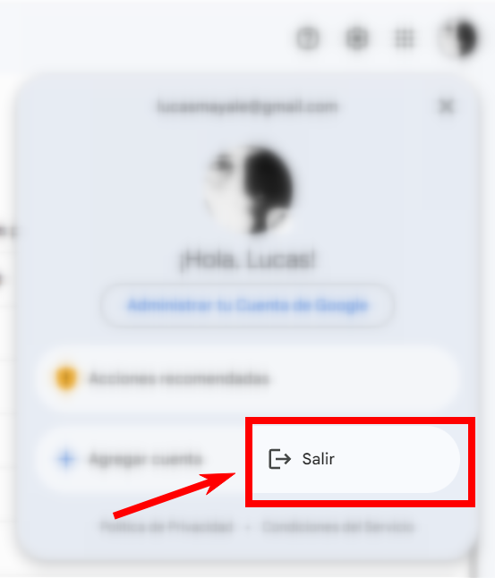
O bien, "Cerrar sesión en todas las cuentas".
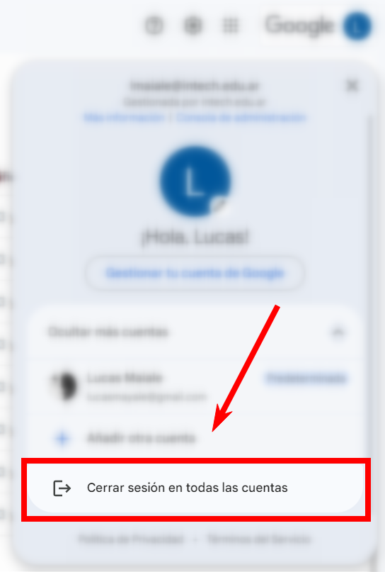
Extra
Una función muy útil en el navegador Google Chrome, es la de poder sincronizar marcadores, historial de navegación, contraseñas, etc. entre diferentes dispositivos.
Para activar esta función, debemos pulsar en el icono más chico, el que se encuentra al lado de los "tres puntos".
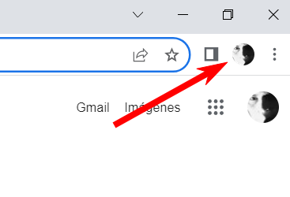
Y luego pulsar en "Activar la sincronización...".
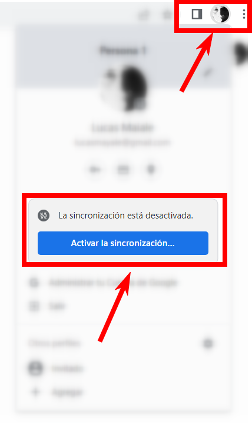
Elegimos qué es lo se va a sincronizar y luego presionamos "Sí, acepto".
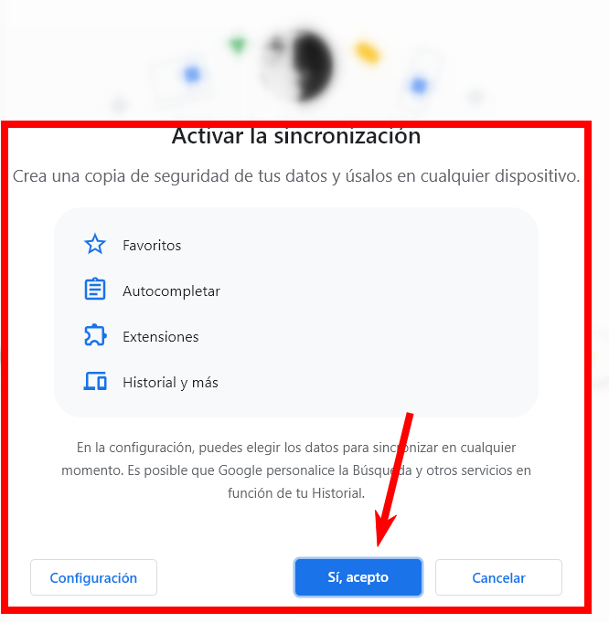